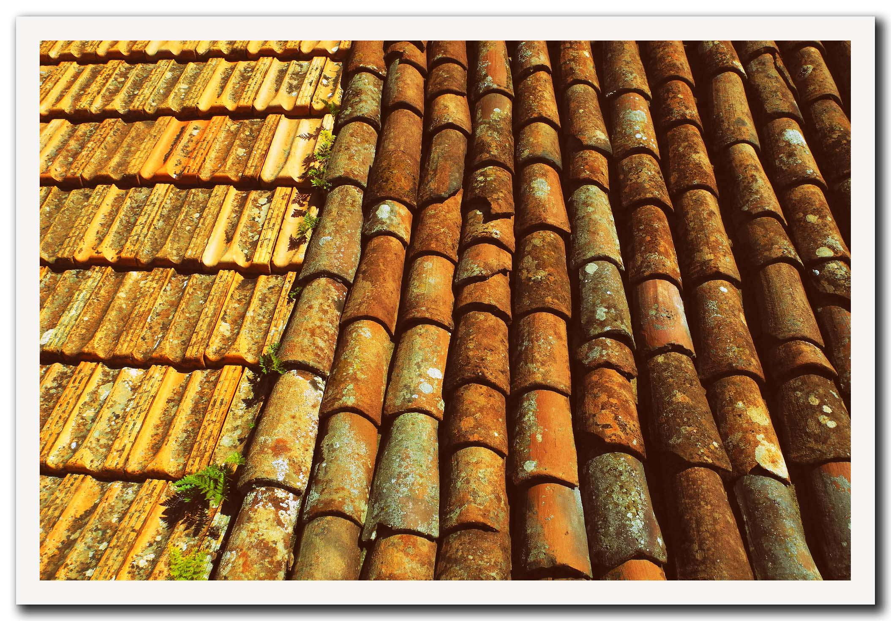

キンドリーなら、
ドローン建物診断が 無料です
屋根・外壁の診断は費用が高いとお考えじゃありませんか？ キンドリーならドローンを使った簡易建物診断が無料です。地上からはなかなか確認できない部分でも、空中から超高精度撮影をすることで屋根に登ることなく建物全体の外観検査が可能です。もちろん、撮影した画像はその場でご確認いただけます。
検査にかかる時間は
たった15分
弊社ドローンパイロットが国土交通省にオンライン申請して、その場ですぐに飛行許可を取得できます。通常の住宅であれば撮影にかかる時間はわずか15分ほど。お客さまをお待たせしません。
お問い合わせから建物診断までの流れ

建物診断の費用は
いただきません
「可能な限り無駄な経費を省き、必要なもののみを適正な価格でご提供させていただく」がキンドリーのモットーです。もう屋根に登るために足場を組んだり大型のハシゴを持ち込む必要はありません。破損個所が特定できて、かつお客さまからのご要望があった場合にのみ、改めてリフォーム・修繕の見積もりをご提案させていただきます。
火災保険申請まで
フルサポート
火事だけでなく、台風や豪雨、大雪などの自然災害による建物の破損もお客様ご加入の火災保険でカバーできます。「でも、色々と手続きが面倒で・・・」という方もご安心ください。保険会社への被災報告や保険金申請など、難しくて手間のかかる手続きをキンドリーがフルサポートします。
火災保険について詳しくはこちら
正規の有資格者が
お伺いします
お伺いするスタッフは、全員正規ライセンスを取得したプロのドローンパイロットです。もちろん、都市部や住宅街などでドローンを飛ばすのに必要な国土交通省の飛行許可も毎回取得して、衝突など万が一の際の保険にも全機加入済みです。